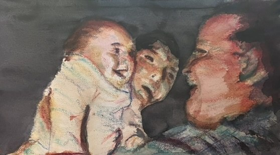
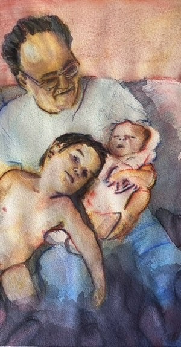
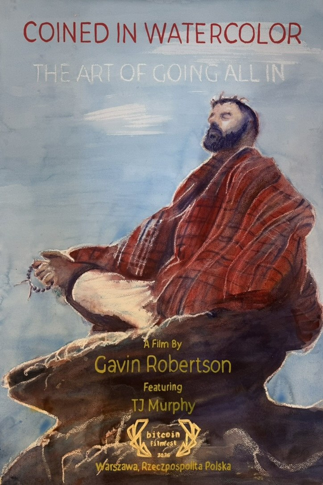

About the artist
TJ Murphy
Artist statement
I paint to capture the luminosity of changing light and the character of the people and places around me. My practice began in 2020 with ink, watercolor, and watercolor pastel. Watching Mount Rainier from Denny Blaine and the morning sky from my balcony became a form of meditation—and an invitation to translate fleeting color into paint.
Working with a limited palette of three primaries and a dark tone, I build each painting’s colors through mixing and layering. Watercolor pastel brings deep saturation, while the texture of the paper creates granulation. I return often to shorelines, birds, and the meeting of sea and sky; in portraits, I look for the expression that makes a person distinctly themselves.
My recent outdoor murals extend this exploration into acrylic, spray paint, and airbrush. I am drawn to the way a painting can become part of its surroundings, bringing color and a sense of place into a garden or shared space.


Background
Based in Seattle, I have made approximately 500 paintings, including many portraits. My work has been shown at Studio 601 and Victrola in Seattle, and in El Salvador and Cape Town, South Africa, where I exhibited a series exploring the origin story of Satoshi Nakamoto, accompanied by twelve poems.
I have published two art books, Watercolor Portraits and Watercolor Landscapes and illustrated twelve poems for my father’s book, Reflections on Time. Original watercolors and portrait commissions are available through Vermillion Aurora, and I welcome opportunities to create outdoor murals.
Coined in Watercolor
Gavin Robertson’s documentary, Coined in Watercolor: The Art of Going All In, follows my journey into art.
